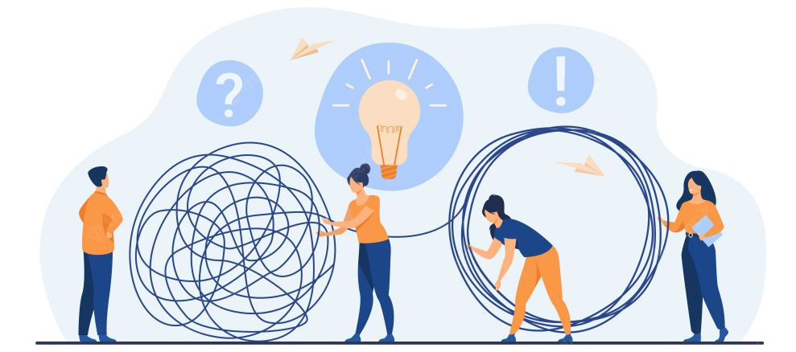

Most people are a little scared of final-year engineering projects, but they are a big part of ensuring you nail the final year exam. They can also help you become a more rounded engineer by giving you practice in applying some of the theories you learned throughout the year. A final year engineering project is a pivotal part of your academic curriculum as an engineering student. It helps you identify and understand the problems associated with the industry and work accordingly. Perhaps, now you would have understood why final-year engineering projects are important. Here we provide you with some practical tips for final year project development : Explore your area of interest and work on such projects- Usually, we tend to take projects which don’t match our sense of interest. So we suggest you take up projects that match your interest to help you dive deep into the concepts. Assume and take up responsibilities; participate in group discussions to enhance your knowledge. Takeup projects that are research-based and industry-oriented add value to your resume.
The best way to identify a project idea is to address real-time problems/scenarios and develop relevant solutions. It is the first step in choosing a project prototype and developing ideas. It helps to incorporate your innovation skills and critical thinking skills. If individuals are pretty good with robotics or android development skills, they should opt for a project related to that domain. As engineering students, you can enhance and boost your creativity and work on various projects that suit your interests. It helps students be aware of various technological trends the feasibility of completing the final year project. It helps students see the project from a larger vision and helps to ignite ideas for compelling startups or projects.
Suppose you plan to work on a blockchain project or any embedded project; you can read the research pacers or journals to understand the recent technological advancements. It helps you derive insightful findings and bring exciting solutions to pitch for various projects. It will help you acquire the required information from the resources for your quality project ideas and dive deep into concepts to derive solutions. These research papers help you know the latest tech trends related to your project domain. You can acquire information from various journals, tutorials, training programs, etc. It helps build project portfolios built on prototypes or ideas to enhance your learning experience.
Final year projects enable students to participate in group discussions brainstorming sessions possess the required skills and knowledge. Working on a project with multiple ideas helps discover distinct ideas and approaches towards a single task. It helps enhance and develop problem-solving, management, and creative thinking skills. Students can work under the expertise of a skilled mentor who can guide them during the journey of entire project development. The mentors can help students to discover their areas of interest and offer them various options, which are as follows:
Project documentation and presentation are some aspects widely ignored by engineering students. It helps to present the project in a prescribed format to the officials, which is helpful for future credentials. It helps enhance superior industrial skills and depict the core idea or vision behind developing the project prototype. It helps students get well-versed with the project as the interviewer will ask several questions regarding the final year project. It will help boost your presentation, research, and communication skills. The final year engineering projects represent your engineering fundamentals, skillset, and knowledge of the subjects. It helps you to acquire your desired career opportunities.
It is one of the significant reasons why final-year engineering projects are important. It helps students to plan everything priorly to having a hassle-free learning experience. Planning is a crucial part of project development and execution. It helps a student proficient in task allocation, time management skills, project layout, etc. Project research creates room for leadership skills; content development skills also promote group reading.
Project planning helps enhance communication skills team working skills and helps to strengthen your core skills. If you have a good command of Python, machine learning, arithmetic core, final year projects will help you work in that field and develop a roadmap to achieve your career goal accordingly.
Innovative domains for software projects exist for students to develop their software ability. Students can explore various project options like:
These projects help students to gain a competitive advantage and enhance communication skills. These project planning skills help students gain experience, pitch for new creative ideas, and bring out insightful project ideas for future endeavors.